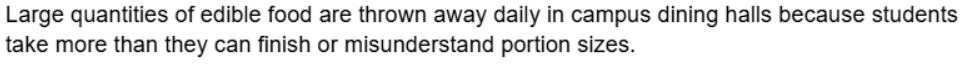

Highlighted projects
Problem Statement
Large quantities of edible food are thrown away daily in campus dining halls because students take more than they can finish or misunderstand portion sizes.
Affinity Diagram

Affinity diagram organizing 20+ ideas for a sustainable campus dining startup into 5 clusters, including product concepts, challenges, marketing, pricing, and growth opportunities.
Sketches

Here are some sketches of some ideas ive come up with to improve sustainable campus dining